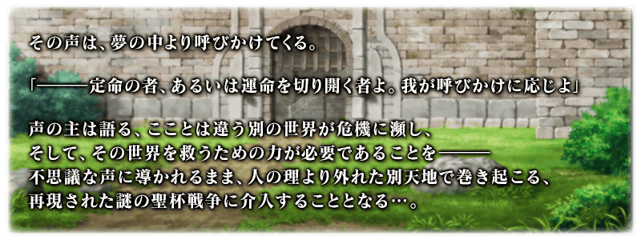
預定舉辦期間限定Fate/Apocrypha×Fate/Grand Order特別活動「復刻版:Apocrypha/Inheritance of Glory -Triumphal-」！
來自夢的引導，發生於不是夢的世界，在再現的聖杯大戰勝利吧！
本活動中進行主線關卡的話，會發生敵陣營從者接連好幾位登場的擊退戰。
撃退戰自3月25日(三) 17:00開始至4月1日(三)的期間，分成5階段發生。
另外，本活動中進行主線關卡的話，活動限定從者「★4(SR)齊格」將以期間限定暫時加入。
與所有御主合力將敵陣營從者撃退，把主線關卡推進至最後，讓活動限定從者「★4(SR)齊格」正式加入吧！
※本頁面皆為開發中圖片。會有與實際圖片相異的情況。 ※本活動是再調整在2018年舉辦的期間限定Fate/Apocrypha×Fate/Grand Order特別活動「Apocrypha/Inheritance of Glory」更容易遊玩的「復刻版活動」。 ※在上次舉辦時獲得過「聖杯」的情況，本活動中會以「傳承結晶」代替「聖杯」做為通過報酬。 ※一部份的關卡為日後開放。
◆活動舉辦期間◆
2020年3月25日(三) 17:00～4月8日(三) 11:59
◆活動參加條件◆
滿足以下條件的御主才能參加
・通過「第一特異點 邪龍百年戰爭 奧爾良」
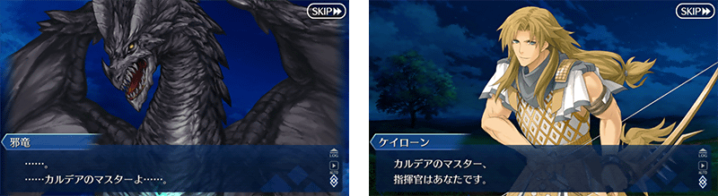

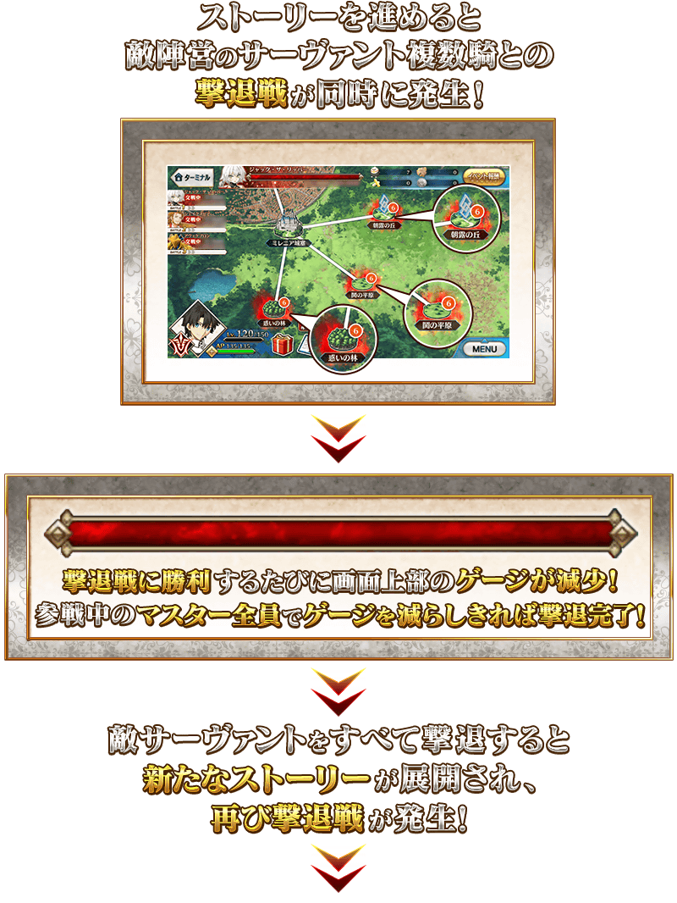
推進故事所發生的撃退戰，是靠御主全員挑戰敵陣營從者，削減「剩餘戰鬥數」的戰鬥。
戰鬥中勝利的話，戰勝的敵從者「剩餘戰鬥數」會減少。
「剩餘戰鬥數」是所有御主共有，靠御主全員無數次通過擊退戰，讓「剩餘戰鬥數」0次的話就能擊退敵從者撃退。
敵從者的襲撃分成5階段，到特定時間後就會同時發生好幾個新階段的擊退戰。
擊退戰獨自計算「剩餘戰鬥數」，「剩餘戰鬥數」變成0後，無法參戰該擊退戰。
※擊退戰有3種難易度，哪個難易度都會減少1次「剩餘戰鬥數」。
◆敵陣營從者一覧◆
介紹在撃退戰出現的敵從者。
◆撃退戰時間表◆
好幾位敵陣營從者同時出現的撃退戰自3月25日(三) 17:00開始，至4月1日(三)為止的期間全部會發生5階段。
請注意第5階段的撃退戰結束後不會發生撃退戰。
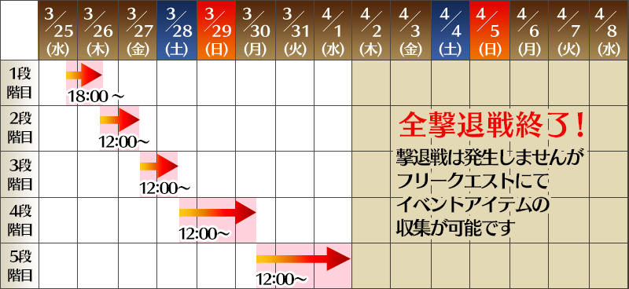
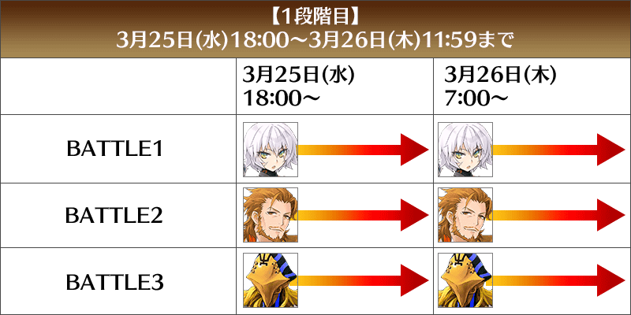
【3月26日(四) 12:00更新】
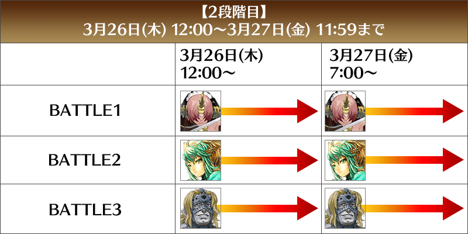
【3月27日(五) 12:00更新】
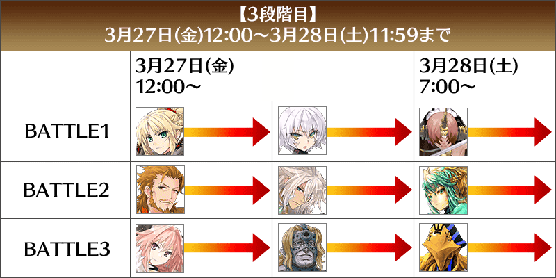
【3月28日(六) 12:00追記】
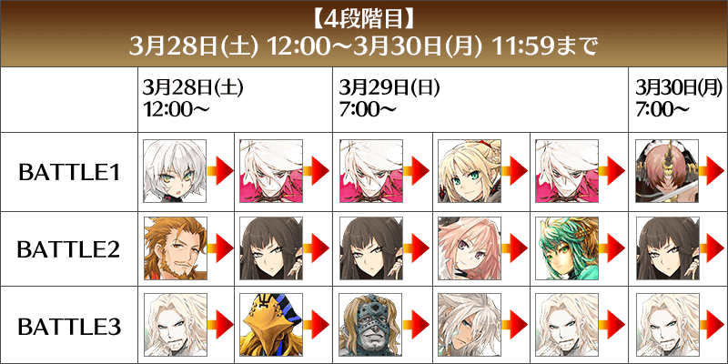
【3月30日(一) 12:00追記】
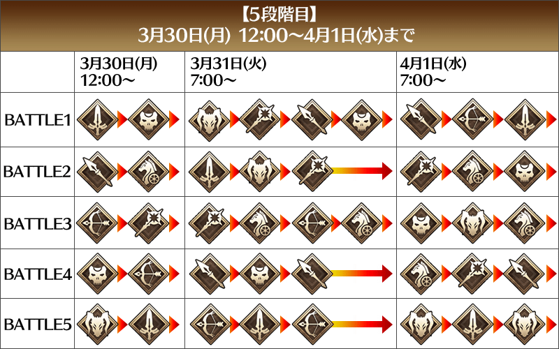
◆自由關卡◆
通過主線關卡第1節的話，會開放可收集活動道具的自由關卡各地點。
之後的自由關卡，依通過主線關卡來開放地點。
絶級及天級是藉由撃退戰的進行追加在後半出現的地點。
| 自由關卡 | 推薦Lv. | 消耗AP |
|---|---|---|
| 中級 | 20 | 20 |
| 上級 | 40 | 30 |
| 超級 | 60 | 40 |
| 絶級 | 80 | 40 |
| 天級 | 90 | 40 |

「惡龍硬幣」可靠通過撃退戰和自由關卡做為報酬入手。
「惡龍硬幣」的總獲得量到達一定量的話，可獲得達成報酬。
達成報酬可在點擊管理室(ターミナル)畫面右上的「活動報酬」鍵所顯示的「硬幣獲得報酬」畫面確認。
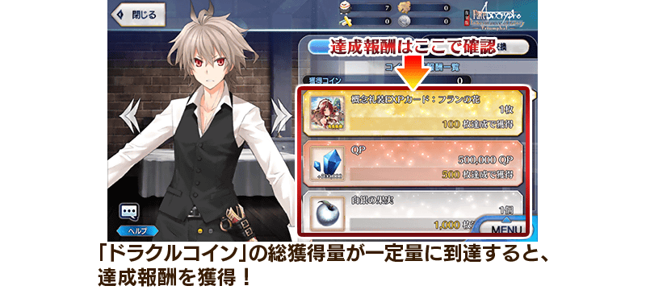
◆得到活動限定概念禮裝EXP卡「フランの花」吧！◆

做為「惡龍硬幣」的獲得報酬，可入手能大幅強化概念禮裝的EXP卡！
擊退戰和通過自由關卡來收集「惡龍硬幣」，藉此機會強化喜愛的概念禮裝！
【4月1日(三) 23:00追記】
以通過期間限定Fate/Apocrypha×Fate/Grand Order特別活動「復刻版:Apocrypha/Inheritance of Glory -Triumphal-」所有主線關卡及「終局特異點」的御主做為對象，開放高難易度的「挑戰關卡」。
「挑戰關卡」就算通過後也不會消失，能無數次挑戰，可以變更從者和概念禮裝的組合等後再次挑戰。
※關卡通過報酬、戰利品、御主EXP、魔術禮裝EXP、絆點數只可在初次通過時獲得。
◆挑戰關卡出現條件◆
・撃退戰第5階段結束後
・通過期間限定Fate/Apocrypha×Fate/Grand Order特別活動「復刻版:Apocrypha/Inheritance of Glory -Triumphal-」的所有主線關卡
◆挑戰關卡參加條件◆
滿足以下條件的御主才能參加
・通過期間限定Fate/Apocrypha×Fate/Grand Order特別活動「復刻版:Apocrypha/Inheritance of Glory -Triumphal-」的所有主線關卡
・通過「終局特異點」
◆挑戰關卡初次通過報酬◆
傳承結晶 1個

超值攻略方法・其1
本活動的期間中，強化「★4(SR)齊格」時的獲得經驗值變成2倍。
是讓成為活動加成對象「★4(SR)齊格」等級一口氣上升的機會！
◆舉辦期間◆
2020年3月25日(三) 17:00～4月8日(三) 11:59
超值攻略方法・其2
對象從者は在期間限定Fate/Apocrypha×Fate/Grand Order特別活動「復刻版:Apocrypha/Inheritance of Glory -Triumphal-」的活動關卡中會得到自身的攻擊威力提升及在關卡通過時自身的絆點數獲得量提升的加成！
強化對象從者，向活動挑戰吧！
※活動加成的效果量因從者而異。
【黑之陣營對象從者】
| 自身的 攻擊威力 |
絆點數 獲得量 |
職階 | 稀有度 | 從者名 |
|---|---|---|---|---|
| ＋100％ | 只限自身 ＋50% |
Archer | ★★★★ | 凱隆 |
| ＋50％ | 只限自身 ＋20% |
Saber | ★★★★★ | 阿斯托爾福 |
| ★★★★ | 齊格飛 | |||
| Rider | ★★★★ | 阿斯托爾福 | ||
| Caster | ★★★ | 阿維斯布隆 | ||
| Assassin | ★★★★★ | 開膛手傑克 | ||
| Berserker | ★★★★★ | 弗拉德三世 | ||
| ★★★★ | 弗蘭肯斯坦 |
【赤之陣營對象從者】
| 自身的 攻擊威力 |
絆點數 獲得量 |
職階 | 稀有度 | 從者名 |
|---|---|---|---|---|
| ＋100％ | 只限自身 ＋50% |
Rider | ★★★★★ | 阿基里斯 |
| ＋50％ | 只限自身 ＋20% |
Saber | ★★★★★ | 莫德雷德 |
| Archer | ★★★★ | 阿塔蘭塔 | ||
| Lancer | ★★★★★ | 迦爾納 | ||
| Caster | ★★ | 威廉・莎士比亞 | ||
| Assassin | ★★★★★ | 賽米拉米斯 | ||
| Berserker | ★★★★ | 阿塔蘭塔〔Alter〕 | ||
| ★ | 斯巴達克斯 |
【其他對象從者】
| 自身的 攻擊威力 |
絆點數 獲得量 |
職階 | 稀有度 | 從者名 |
|---|---|---|---|---|
| ＋100％ | 只限自身 ＋50% |
Caster | ★★★★ | 齊格 |
| ＋50％ | 只限自身 ＋20% |
Ruler | ★★★★★ | 天草四郎 |
| ★★★★★ | 貞德 | |||
| ＋20％ | Archer | ★★★ | 大衛 | |
| Lancer | ★★ | 武藏坊弁慶 | ||
| Rider | ★★ | 聖喬治 | ||
| Berserker | ★★★★★ | 坂田金時 |
※就算成為對象從者也會有在本活動的主線劇本未登場的情況。 ※自3月22日(日) 17:00，在從者選擇畫面和從者強化畫面等，追加活動加成篩選器。由於是只顯示於活動活躍從者的便利功能，敬請搭配活用。
超值攻略方法・其3
裝備活動限定概念禮裝與期間限定概念禮裝的話，在活動中會受到各式各樣的恩惠。
裝備可靠「惡龍硬幣」獲得報酬入手的活動限定概念禮裝「★5(SSR)トゥリファスにて」的話，在活動關卡中會提升自身的攻擊威力。
另外，裝備可靠活動道具交換入手的「★5(SSR)城塞の午後」的話，在活動關卡中會提升「惡龍硬幣」的掉落獲得量！
並且，裝備在聖晶石召喚Pick Up的期間限定概念禮裝「★5(SSR)彼方への巡礼」「★4(SR)刹那のまほろば」「★3(R)出発進行！」的話，會提升活動道具「賢者的粉筆」「伊利亞特紙片」「駿鷹玩偶」各自的掉落獲得數。
※請注意各關卡的道具掉落率並非100％。

◆靈基再臨◆
使用活動期間中靠「惡龍硬幣」獲得報酬外無法入手的「難以忘懷之葉」，重複4次靈基再臨的話，卡面會有所變化！

※「★4(SR)齊格」不會隨靈基再臨使戰鬥角色的外觀變化。
◆再入手特典◆
在復刻前的期間限定Fate/Apocrypha×Fate/Grand Order特別活動「Apocrypha/Inheritance of Glory」入手「★4(SR)齊格」的情況，在本活動能獲得再入手特典。
入手「累計6位以上」「★4(SR)齊格」的話，第6位以後，每新入手1位就贈送稀有稜鏡1個至禮物箱。


介紹「★4(SR)齊格」的寶具演出！
在「Fate/Grand Order」官方網站內的公告中，以影片公開寶具演出，敬請確認。
活動道具可自點擊管理室(ターミナル)畫面右上「活動報酬」鍵所顯示的「活動道具交換」畫面，交換以下的道具
※關於靈衣「圖里法斯的記憶」開放權，在通過本活動的所有主線關卡後才能交換。 ※活動道具交換期間結束後「賢者的粉筆」「伊利亞特紙片」「駿鷹玩偶」會消失。
◆交換期間◆
2020年3月25日(三) 17:00～4月15日(三) 11:59
◆能用賢者的粉筆交換的道具◆
|
【活動限定從者】
【靈衣開放權】
【活動限定概念禮裝】
【技能強化＆靈基再臨素材】
【技能強化素材】
【其他道具】 |
◆能用伊利亞特紙片交換的道具◆
 |
【活動限定從者】
【活動限定概念禮裝】
【技能強化＆靈基再臨素材】
【技能強化素材】
【其他道具】 |
◆能用駿鷹玩偶交換的道具◆
 |
【活動限定從者】
【活動限定概念禮裝】
【技能強化＆靈基再臨素材】
【技能強化素材】
【其他道具】 |
|
★★★★★SSR
|

| 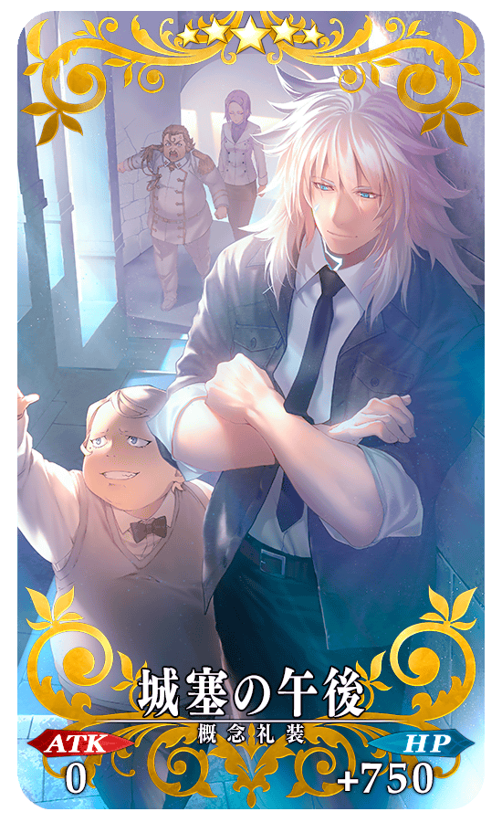 |
★★★★★SSR |
做為期間限定活動期間限定Fate/Apocrypha×Fate/Grand Order特別活動「復刻版:Apocrypha/Inheritance of Glory -Triumphal-」的報酬，「★5(SSR)莫德雷德(Saber)」的靈衣開放權登場！
可入手上述靈衣開放權做為本活動的活動道具交換報酬。
另外，想要靈衣開放的話，除了靈衣開放權外必須再加上一些開放條件。
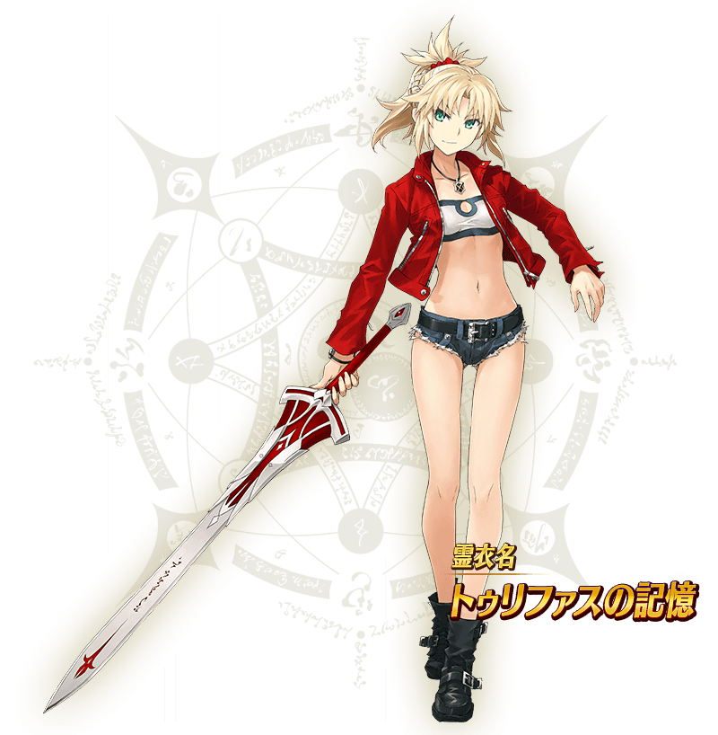
◆有關靈衣開放權的注意◆
※「★5(SSR)莫德雷德(Saber)」的靈衣開放權只限本活動的活動道具交換期間才能入手。
※本次追加的「★5(SSR)莫德雷德(Saber)」靈衣，會與外觀一起變化一部份份語音変。
※請注意未持有「★5(SSR)莫德雷德(Saber)」的情況，可入手靈衣開放權。但無法進行靈衣開放。
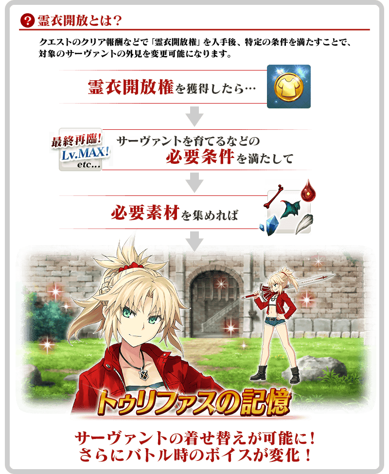

「靈衣開放」是自強化畫面進行す。
※「靈衣開放」後會自動切換戰鬥角色和圖示。若想回到「靈衣開放」前的狀態和變成其他再臨階段的情況，可自從者詳細畫面變更。 ※透過「靈衣開放」不會讓職階和數值有所變化。
介紹開放靈衣「圖里法斯的記憶」的「★5(SSR)莫德雷德(Saber)」寶具演出！
在「Fate/Grand Order」官方網站內的公告中，以影片公開寶具演出，敬請確認。
翻新「★5(SSR)開膛手傑克」的戰鬥動作及寶具演出！
在「Fate/Grand Order」官方網站內的公告中，以影片公開寶具演出，敬請確認。
◆翻新實施時間◆
2020年3月25日(三) 17:00～
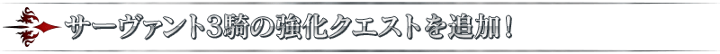
【3月25日(三) 17:00追記】
強化「★5(SSR)莫德雷德(Saber)」「★5(SSR)弗拉德三世(Berserker)」「★5(SSR)天草四郎」的特別關卡「從者強化關卡」，在迦勒底之門永久追加。
不僅進行對象從者的強化，也可獲得聖晶石做為關卡通過報酬。
※請注意在從者強化關卡沒有文字冒險部份。
◆追加時間◆
2020年3月25日(三) 17:00～
◆開放條件◆
持有的強化對象從者，必須使其最終再臨。
※未持有對象從者的話，不會出現關卡。
※關卡沒有舉辦期限。

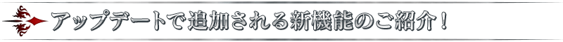
在2020年3月25日(三)的維修後反映的更新內容之中，介紹代表性的內容。
◆追加時間◆
2020年3月25日(三) 17:00～
篩選器功能的運作翻新
為了讓篩選器功能更容易操作，進行徹底地變更篩選器功能的運作。
・篩選器的初期設定全部變更成「OFF」。(之前是全部「ON」) ・篩選器設定分開成幾個不同的分類，各分類將對象縮小範圍。分類內的設定全部「OFF」的情況，不會進行該分類的縮小範圍。 ・變更幾個篩選器設定的名稱。
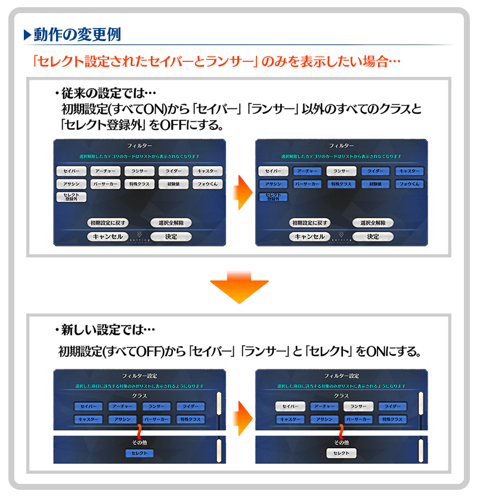
※隨著翻新，所有篩選器的設定狀態將重置成初期設定。之前有設定篩選器的玩家，麻煩請再設定篩選器。
在篩選器功能追加「寶具類型」和「寶具效果」
在選擇從者際時篩選器設定項目追加「寶具類型」和「寶具效果」。因此，能夠篩選出「只顯示持有以Quick全體攻擊寶具的從者」等。
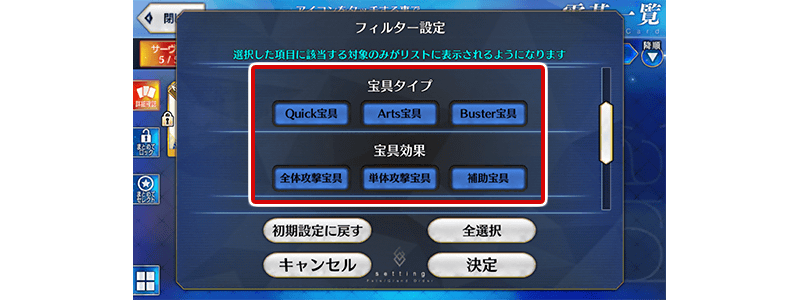
在戰鬥時修改成更容易確認戰利品
點擊戰鬥畫面右上的寶箱圖示後修改成會顯示戰利品視窗。因此在戰鬥選單下方顯示的戰利品顯示會變更成移動到戰利品視窗的按鍵。
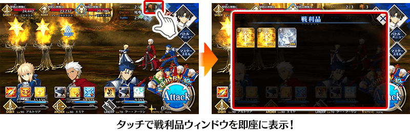
在戰鬥中修改成可變更各種音效音量
在戰鬥選單，修改成可與遊戲選項同様地進行各種音效的音量設定。變更過的音量設定在戰鬥結束後仍會保持。
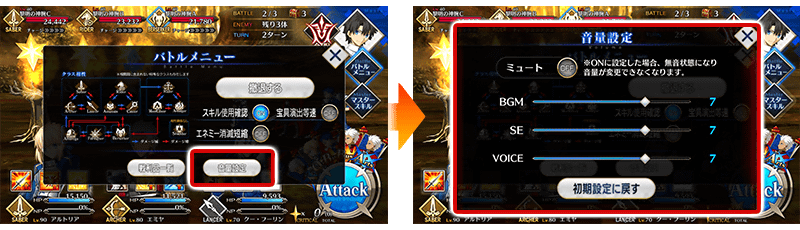
卡片尺寸變更功能的對應畫面擴張
卡片尺寸變更功能，也擴張到我的最愛變更畫面和靈衣一覧畫面。
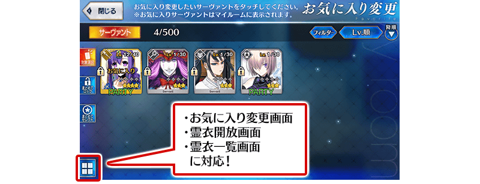
其他還有，期間限定「復刻 Fate/Apocrypha×Fate/Grand Order特別活動Pick Up召喚(每日交替)」同時舉辦！
關於詳情，請自下述橫幅確認。
■「復刻 Fate/Apocrypha×Fate/Grand Order特別活動Pick Up召喚(每日交替)」詳細情報